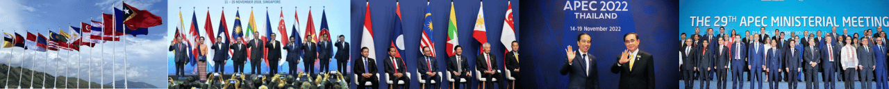

Indonesia dan Malaysia menjalin kerja sama regional selama bertahun-tahun melalui kolaborasi-kolaborasi di kawasan Asia Tenggara. Kedua negara, yang merupakan anggota aktif ASEAN (Association of Southeast Asian Nations), berupaya untuk memperkuat hubungan dalam berbagai bidang, seperti ekonomi, pendidikan, sosial, serta keamanan kawasan. Kolaborasi dalam ruang lingkup ASEAN ini mencerminkan komitmen bersama kedua negara untuk mencapai kemajuan dan stabilitas regional, baik melalui kerja sama langsung maupun melalui inisiatif ASEAN yang lebih luas. Sebagai tetangga dekat, Indonesia dan Malaysia memainkan peran penting dalam menjaga stabilitas politik dan ekonomi di Asia Tenggara. Melalui kolaborasi ini, kedua negara mendukung tujuan ASEAN untuk memajukan kesejahteraan masyarakat di kawasan, menjaga perdamaian, dan meminimalkan ancaman keamanan, termasuk dalam isu-isu seperti terorisme dan perdagangan manusia.
.jpeg)
ASEAN adalah organisasi di Asia Tenggara yang bertujuan untuk memajukan kerja sama ekonomi, politik, dan keamanan antara negara-negara anggota. Melalui ASEAN, Indonesia bekerja sama dengan negara-negara Asia Tenggara lainnya untuk Melalui ASEAN, Indonesia dapat bekerja sama dengan negara-negara di Asia Tenggara untuk menciptakan kawasan yang aman dan stabil, meningkatkan perdagangan bebas antar negara, dan memudahkan pertukaran barang dan jasa di kawasan ini. ASEAN juga membantu dalam menangani isu-isu penting seperti keamanan maritim, ketahanan pangan, dan penanggulangan bencana.
APEC adalah organisasi negara-negara di kawasan Asia Pasifik, termasuk Indonesia. APEC bertujuan memajukan kerja sama ekonomi dan perdagangan di kawasan ini. Melalui APEC, Indonesia dapat mengurangi hambatan dalam perdagangan, meningkatkan investasi, dan mengembangkan inovasi. Selain itu, APEC juga berfokus pada pengembangan usaha kecil, pengembangan keterampilan tenaga kerja, serta mendukung pembangunan.